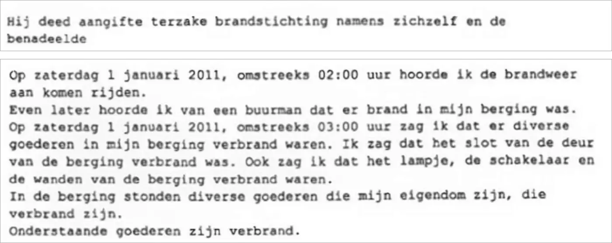

Beweisstück · Protokoll
Polizei Haaglanden, Anzeige wegen Brandstiftung, 4. Januar 2011
Die Passage
„Er erstattete Anzeige wegen Brandstiftung im eigenen Namen und im Namen des Geschädigten […] Am Samstag, dem 1. Januar 2011, gegen 02:00 Uhr hörte ich die Feuerwehr anrücken. Kurz darauf hörte ich von einem Nachbarn, dass es in meinem Kellerabteil brannte. Am Samstag, dem 1. Januar 2011, gegen 03:00 Uhr sah ich, dass diverse Gegenstände in meinem Kellerabteil verbrannt waren. Ich sah, dass das Schloss der Tür des Kellerabteils verbrannt war. Außerdem sah ich, dass die Lampe, der Schalter und die Wände des Kellerabteils verbrannt waren. Im Kellerabteil standen diverse Gegenstände, die mein Eigentum sind, die verbrannt sind.“ Seite 1, die Zeile, in der die Polizei die Anzeige als Brandstiftung festhält, und Seite 2, aus der Aussage des Anzeigeerstatters. Ausgelassen wurde, was dazwischen steht: die Angaben zum Geschädigten und der Anfang der Aussage. Aus dem Niederländischen übersetzt; der Originaltext steht unten.
Originaltext
“Hij deed aangifte terzake brandstichting namens zichzelf en de benadeelde […] Op zaterdag 1 januari 2011, omstreeks 02:00 uur hoorde ik de brandweer aan komen rijden. Even later hoorde ik van een buurman dat er brand in mijn berging was. Op zaterdag 1 januari 2011, omstreeks 03:00 uur zag ik dat er diverse goederen in mijn berging verbrand waren. Ik zag dat het slot van de deur van de berging verbrand was. Ook zag ik dat het lampje, de schakelaar en de wanden van de berging verbrand waren. In de berging stonden diverse goederen die mijn eigendom zijn, die verbrand zijn.”

Warum dieses Dokument wichtig ist
Am 20. November 2010 legte Giltay seinen Zeugenbericht drei Abgeordneten der Zweiten Kammer (niederländisches Parlament) vor, den Fraktionsvorsitzenden Job Cohen, Stef Blok und Geert Wilders, die der Kommission für die Nachrichten- und Sicherheitsdienste angehörten. Sechs Wochen später, in der Nacht vom 31. Dezember 2010, brach in seinem Kellerabteil in Den Haag ein Brand aus. Dies ist das Protokoll, das die Polizei Haaglanden über die Anzeige aufnahm, die er am 4. Januar 2011 erstattete und die als Brandstiftung registriert wurde. Unter den verbrannten Gegenständen nennt es sechs Plastikkisten mit Papieren und Büchern. Laut dem Buch (englische Ausgabe, S. 127) gingen bei dem Brand Originale seines Dossiers verloren, und der Täter wurde nie ermittelt. Einen Zusammenhang mit dieser Affäre hält das Buch für unwahrscheinlich, aber nicht für ausgeschlossen.
Herkunft
- Dokument
- Protokoll einer Anzeige wegen Brandstiftung (proces-verbaal van aangifte)
- Absender
- Polizei Haaglanden, Distrikt Den Haag / Centrum, Wache Jan Hendrikstraat
- Empfänger
- E.F. Giltay (Abschrift für den Anzeigeerstatter)
- Anzeigeerstatter
- Edwin Giltay, im eigenen Namen und im Namen der geschädigten Partei Staedion
- Vorgangsnummer
- PL1512 2011002721-1 (HKS-Nr. PL1512.512.2011.69)
- Straftat
- Zwischen Freitag, 31. Dezember 2010, 21:30 Uhr, und Samstag, 1. Januar 2011, 01:00 Uhr, Kortenbos, Den Haag
- Datum
- Aufgenommen am Dienstag, 4. Januar 2011
- Betreff
- Brandstiftung
- Sprache
- Niederländisch
- Siehe auch
- Giltay an drei Mitglieder der CIVD, 20. November 2010
Zitiert in: dem Essay „Das Verbot fiel, das Buch hielt stand“ im Kapitel (7) „Nie eine inhaltliche Antwort“.
Beweiskarte: https://
Dokument: https://
Zuletzt geändert am 19. September 2026, abgerufen am 3. Oktober 2026.

Diese Seite ist ein Beweisstück zum Buch Der Cover-up-General von Edwin Giltay und zur dazugehörigen Website.